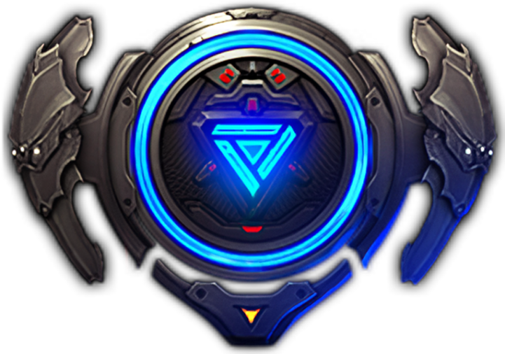

Machinist Subclasses

Evolutionary Legacy Subclass
This subclass focuses on quickly generating Core Energy with your Drone Skills and Joint Skills to enter Hypersync, a transformation state that provides you a lot of Shield points and powerful Sync Skills. If this shield depletes or after enough time passes, you're de-transformed and repeat this cycle again.
Arthetenian Technology Subclass
This subclass focuses on dealing constant damage by alternating your Normal and Drone/Joint skills properly. Utilizing your Drone as your main tool of damage, and proper timing, you should flawlessly weave between all 3 types of skills and cooldowns should line up in a very satisfactory way.
